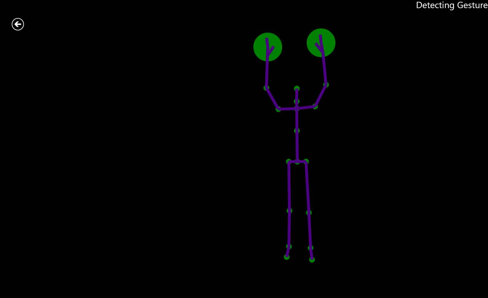
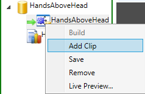
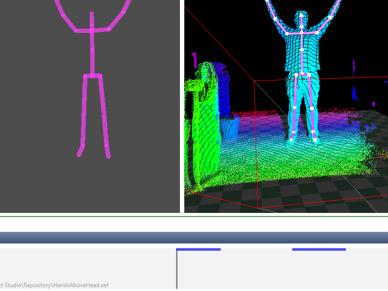
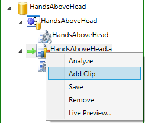
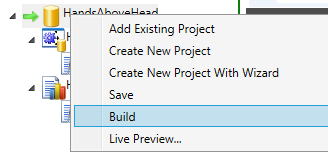
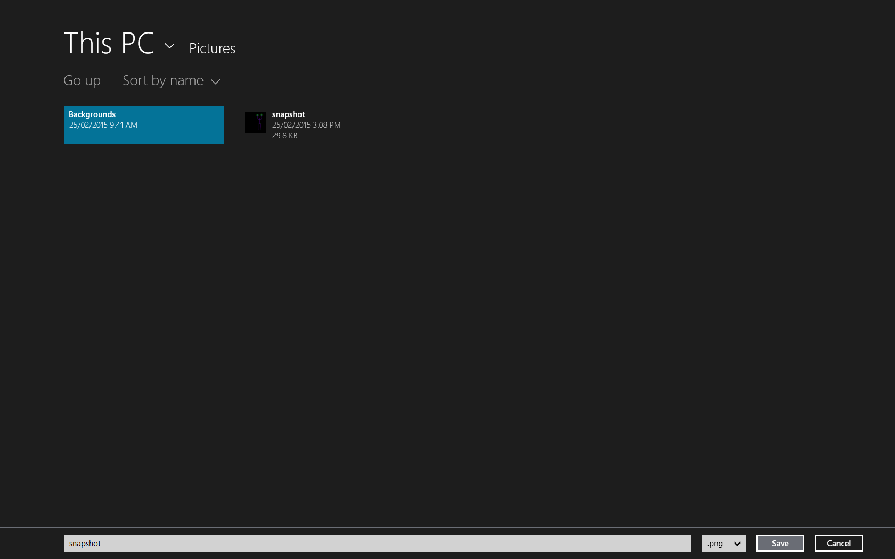

Kinect 2 for Windows Demo App
The Hands On Labs to complete a sample application for Windows 8.1 and the Kinect 2 for Windows
Kinect 2 Hands On Labs
Lab 12: Gesture Builder
Estimated Time to Complete: 40min
This lab is part of a series of hands on labs which teach you how to use almost every available feature of the Kinect 2. This is the twelfth lab in the series, and it teaches you how to record, tag, and compile a gesture database, using the Visual Gesture Builder application. This lab also describes how to import existing tagged clips into the project and take a screenshot in your application using a gesture.
This lab will explain the following:
- Recording, tagging and compiling a gesture database
- Importing existing tagged clips into the project
- Take a screen shot with a gesture in Kinect 2 application
This lab comes with a code solution for the start point, and a completed code solution of the exercises covered.
Exercise 1 - Recording, tagging and compiling a gesture database
This exercise will teach you how to use Visual Gesture Builder to record, tag, and compile a gesture database.
-
As you learned in the previous Kinect Studio lab, record a feed where you make a gesture. To create a gesture database file, the color feed is not needed, so for the interest of this lab, you will not need to record color data, this will keep the file size smaller.
Make it a simple gesture such as Hands on knees or Hands above head or Sitting down. You should also record some negative gestures. Negative gestures are gestures which are not the gesture you want to use but some other action. Negative Gestures can be recorded in the same clip. -
Open Visual Gesture Builder (VGB). It will be found with the other Kinect Tools in a folder simliar to this: C:\Program Files\Microsoft SDKs\Kinect\v2.0_1409\Tools\KinectStudio\VisualGestureBuilder.exe
-
Click File - > New Solution, make a folder for your VGB solutions, then create a folder for this gesture. Enter the name for the solution that represents your gesture.
-
Right click the solution in the explorer window and click Create New Project With Wizard.

-
The Wizard helps create gestures by taking you through selectable options for the hand states, joint mask, gesture symmetry and more. The Wizard is a much simpler and faster way to create a gesture. Complete the wizard using the options which reflect the gesture you have chosen and recorded.
-
Right click and Add Clip and find the recorded Kinect Studio .xef that you created.

-
If you click on the recorded clip in the explorer of VGB, you will be able to see the clip.
-
Controls for the VGB tagging timeline are at the bottom of the screen and may require you to resize the layout. There are shortcuts at the bottom of the screen under the Control window, you must have that window selected in order to use the shortcuts. The shortcuts you will use are:
- Enter – to tag key frames true
- Left and right arrow – to cycle key frames
- Shift + left and right arrow – to group select key frames.
-
Navigate through the clip to the the start of your gesture, where you would like the gesture to start.

-
Once you are sure this is where you want the gesture to begin, group select key frames until you reach a point where you want the gesture to end, and then press enter.
A blue line is shown where the gesture is selected. By default all frames are false and have no line and you don’t need to set every other frame to false. -
Once you have tagged your clip Right click the database and click Build. You will be able to see the progress in the Output window at the bottom.
-
Right click the Analysis and click Add Clip. Add your recorded clip.

-
Right click the Analysis again and click Analyze.
Select your .gbd file. -
Select the Clip inside Analysis, and you will be able to see the confidence of the Gesture and whether it is marked as true or false (valid or not valid). If you are not happy with the confidence of the Gesture, you can go back and edit your key frames.
-
Make sure to save the Database with any changes you make and build and analyze the frames to make sure you are happy.
-
Once you are happy with the confidence you can check if your gesture works using VGB View.
-
Make sure your Kinect is plugged in, select File, Live Preview and select your .gdb file. You can test to see if your gesture is working against your database file.
Exercise 2 - Importing existing tagged clips into a project
This exercise will teach you how to import existing tagged clips into a database then add that database to the Kinect2Sample solution. Using more clips for gesture accuracy is important for larger projects.
To import existing tagged clips into the database, locate your solution with the database you want, for this exercise you will use the pre-existing database.
Right click the database and add your tagged clip into the solution under the database.
Once your tagged clips are in the database, you can build the solution, instead of just the database, you do this by right clicking the solution and select Build.

Once the database has been rebuilt you can use this database in your code with more tagged clips.
Open the Kinect 2 Sample.
Create a new folder called Database, inside the Kinect2Sample project.
Open that folder in windows file explorer and copy the gesture database (.gbd) that you made last exercise into this new folder.
Return to Visual Studio and right click on the project and click Add Folder...,then select the Database folder and click Add.
Right Click the Database folder in the Solution Explorer and select Add -> existing item....
Click on the database inside the solution and set its Copy to Output Directory property to Copy always and Build Action property to Content.
Exercise 3 - Test your app with a recording
This exercise will teach you how to use your Visual Gesture Database in your application to take a screenshot.
Download the GestureDetector.cs and GestureResultView.cs, from the links below, and add them to the Kinect2Sample by copying them to the same directory as the Kinect2Sample.csproj file. Then Right Click the project in the Solution Explorer and select Add Existing Item... and add the two new files.
In the GestureDetector.cs file there are two strings, both are critical to this exercise working. The variable names for these string are gestureDatabase and handsAboveHeadGestureName, and value for these string variables need to match the Gesture Database name and the Gesture name that you created with the Visual Gesture Builder.
If you wish to add more than one database you will need to open the GestureDetector and add another for loop that checks for your gesture by name. An example of this can be seen in constructor within the GestureDetector.cs file. In order to support multiple gestures, you also need to navigate to the Reader_GestureFrameArrived handler method and find the commented code twoards the end of the method. You will need to edit the commented code to check for the relevant gesture names.
Add a reference to the VisualGestureBuilder in the porject. Right click the References folder, select Add Reference | Windows 8.1 | Extensions and add VisualGestureBuilder.
Add the capability for your application to access the pictures library. Open your Package.appxmanifest and navigate to the Capabilities tab and check Pictures Library.
Open the MainPage.xaml.cs and add these using statements at the top;
using Windows.Storage.Pickers; using Windows.Graphics.Imaging; using Windows.Graphics.Display; using Windows.Storage;Add new variables to the file as per this highlighted code below.
//Face Orientation Shaping private double prevPitch = 0.0f; private double prevYaw = 0.0f;
/// <summary> List of gesture detectors,///there will be one detector created for each potential body/// (max of 6) </summary>private ListgestureDetectorList = null; public bool isTakingScreenshot = false;public event PropertyChangedEventHandler PropertyChanged;Add code to the end of the MainPage() constructor, to initialize the GestureDetectors and the GestureResultViews. There is a distinct GestureDetector for each possible body (6). Each detector will be updated with relevant Body Id's later, as they are paused/resumed. The detectors are initialized with an empty view until then.
Register for the GestureResultView PropertyChanged to easily determine when anything has changed regarding any gesture.// Initialize the gesture detection objects for our gesturesthis.gestureDetectorList = new List(); // Create a gesture detector for each body (6 bodies => 6 detectors)int maxBodies = this.kinectSensor.BodyFrameSource.BodyCount;for (int i = 0; i < maxBodies; ++i){GestureResultView result =new GestureResultView(i, false, false, 0.0f);GestureDetector detector =new GestureDetector(this.kinectSensor, result);result.PropertyChanged += GestureResult_PropertyChanged;this.gestureDetectorList.Add(detector);}Add code to the Reader_MultiSourceFrameArrived handler method before the switch(CurrentDisplayFrameType), to use the bodyFrame to register a gesture across all of our frames.
using (bodyFrame = multiSourceFrame.BodyFrameReference.AcquireFrame()){RegisterGesture(bodyFrame);}Add code after the Reader_MultiSourceFrameArrived method to handle the confidence of the gesture as well as the visual.
void GestureResult_PropertyChanged(object sender,PropertyChangedEventArgs e){GestureResultView result = sender as GestureResultView;if (result.Confidence > 0.8){Screenshot();}}It would be good to respond to the confidence of the result. You can achieve this by adding this code to the MainPage.xaml right above the FullScreenBackButton
<TextBlock x:Name="GestureVisual"Grid.Row="1"Text="Detecting Gesture"FontSize="30"Foreground="White"HorizontalAlignment="Right"VerticalAlignment="Top"Opacity="0.0"></TextBlock>Add the highlighted code in the GestureResult_PropertyChanged
GestureResultView result = sender as GestureResultView;
this.GestureVisual.Opacity = result.Confidence;if (result.Confidence > 0.8)Add this code right after GestureRecognized to capture the screenshot to a file.
async private void Screenshot(){// Thread protetction on FileIO actionsif (!isTakingScreenshot){isTakingScreenshot = true;RenderTargetBitmap renderTargetBitmap =new RenderTargetBitmap();await renderTargetBitmap.RenderAsync(RootGrid);var pixelBuffer = await renderTargetBitmap.GetPixelsAsync();var savePicker = new FileSavePicker();savePicker.DefaultFileExtension = ".png";savePicker.SuggestedStartLocation =PickerLocationId.PicturesLibrary;savePicker.SuggestedFileName = "snapshot.png";// Prompt the user to select a filevar saveFile = await savePicker.PickSaveFileAsync();// Verify the user selected a fileif (saveFile != null){// Encode the image to the selected file on diskusing (var fileStream =await saveFile.OpenAsync(FileAccessMode.ReadWrite)){var encoder =await BitmapEncoder.CreateAsync(BitmapEncoder.PngEncoderId,fileStream);encoder.SetPixelData(BitmapPixelFormat.Bgra8,BitmapAlphaMode.Ignore,(uint)renderTargetBitmap.PixelWidth,(uint)renderTargetBitmap.PixelHeight,DisplayInformation.GetForCurrentView().LogicalDpi,DisplayInformation.GetForCurrentView().LogicalDpi,pixelBuffer.ToArray());await encoder.FlushAsync();}}isTakingScreenshot = false;}}Lastly add this RegisterGesture method
private void RegisterGesture(BodyFrame bodyFrame){bool dataReceived = false;Body[] bodies = null;if (bodyFrame != null){if (bodies == null){// Creates an array of 6 bodies, which is the max// number of bodies the Kinect can track simultaneouslybodies = new Body[bodyFrame.BodyCount];}// The first time GetAndRefreshBodyData is called,// allocate each Body in the array.// As long as those body objects are not disposed and// not set to null in the array,// those body objects will be re-used.bodyFrame.GetAndRefreshBodyData(bodies);dataReceived = true;}if (dataReceived){// We may have lost/acquired bodies,// so update the corresponding gesture detectorsif (bodies != null){// Loop through all bodies to see if any// of the gesture detectors need to be updatedfor (int i = 0; i < bodyFrame.BodyCount; ++i){Body body = bodies[i];ulong trackingId = body.TrackingId;// If the current body TrackingId changed,// update the corresponding gesture detector with// the new valueif (trackingId !=this.gestureDetectorList[i].TrackingId){this.gestureDetectorList[i].TrackingId = trackingId;// If the current body is tracked, unpause its// detector to get// VisualGestureBuilderFrameArrived events// If the current body is NOT tracked, pause its// detector so we don't waste resources trying to get// invalid gesture resultsthis.gestureDetectorList[i].IsPaused =trackingId == 0;}}}}}Build and Run the lab, complete the gesture in any of the frames and the screenshot dialogue will be displayed.
Once you start your gesture, you will see the words Detecting Gesture at the top right of your screen. The opacity of the text will change based on the confidence of the gesture.
Below is the save dialogue that is displayed up after you have completed your gesture.

Summary
You have now learned how to effectively build custom gestures using Visual Gesture Builder. You should also have understood how to implement a Gesture Database into your application and use that gesture to take a screen shot.
Back to Top